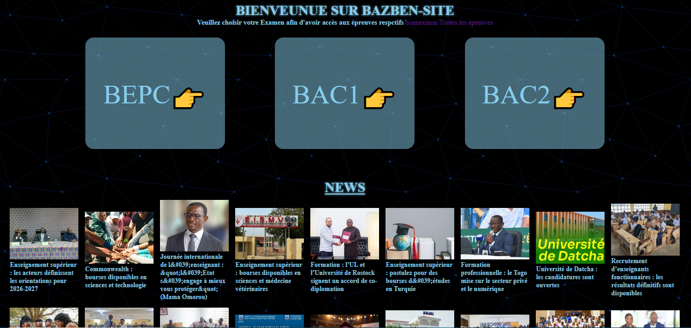
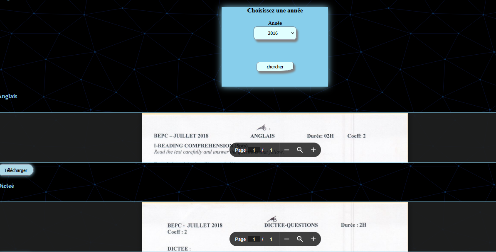
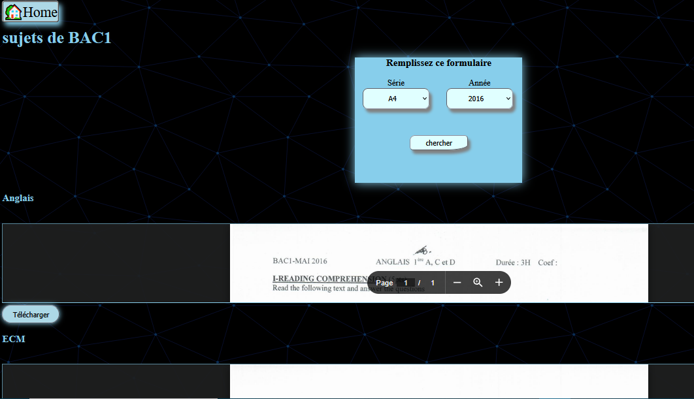
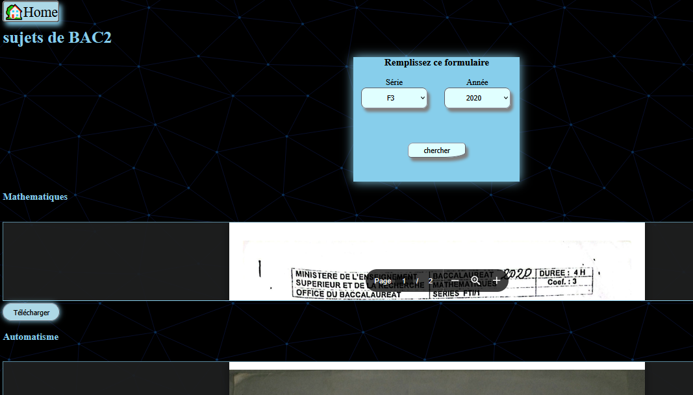

Projets Réalisés
17 ans
BAZBEN-SITE-PREUVE




« Quand l'éducation rencontre la performance technologique : automatiser l'accès au savoir. »
Conception et développement d'une infrastructure robuste dédiée à la centralisation et à la distribution de ressources éducatives. Ce projet combine une base de données relationnelle hautement optimisée, des scripts d'extraction de données et une interface utilisateur fluide pensée pour la rapidité d'exécution, même sous faible bande passante. cliquez ici:
bazben.bbroot.com
lien github: https://github.com/bazben
HTML
CSS
JavaScript
node.js
SQL